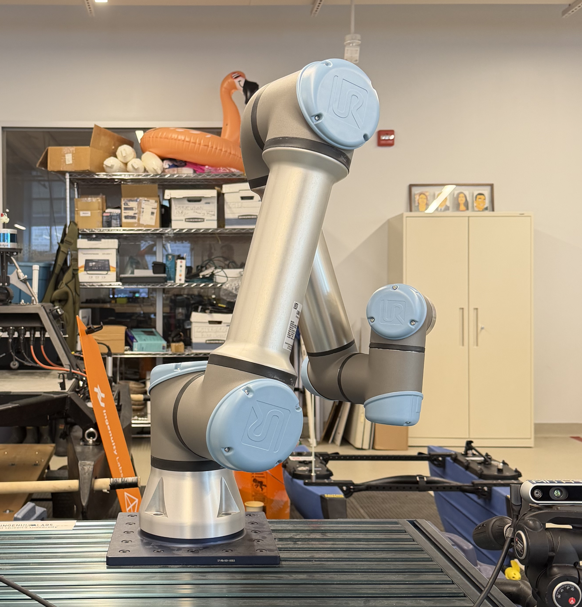

Reciprocal Trust: HRI

Overview
From May to August 2026, I took a research project course under Professor Matthew Pan. He is a core member of Ingenuity Labs and the head professor of Machine Intelligence and Human-Robot Interaction Laboratory (MItHRIL) at Queen's University. His research focus includes human-robot interaction and social robotics, a stream I am interested in because of the unique intersection between engineering and artistic expression. I created an architecture for a UR5e robotic arm that expresses a gradual transition from fear and avoidance to comfort and affiliation contingent on user behavior.
Specific Skills
- Using NuiTrack, C++, and a d435 Intel RealSense camera, I created a script to track user skeleton joints. This data was used to calculate proximity, velocity, and acceleration.
The Architecture
For further in depth, please refer to my paper at the bottom of the page.Activity Engine
An activity score is computed using normalized components generated from the user; the distance of their head and hands, velocity, acceleration, and two indicator variables for the hands indicating if they are raised above shoulder level. The user with the highest activity score is the subject of interest that the robot will focus on.Trust Levels
There are six-trust levels that represent the transition from avoidance to affiliation. Trust levels 1a and 1b show the robot seeking physical safety. Levels 2a and 2b correspond to psychological safety and social exchange, the robot begins to show curious behavior as a head tilt. Lastly, levels 3a and 3b correspond to emotional bonding and partnership, where the robot demonstrates happy idle behavior such as dancing or bouncing. Trust is represented by a numerical value which accumulates over time, but is incremented or decremented over time depending on the values of the components computed for the activity score. The trust score is computed using the equation below:
T(t) = rtrust(t − t0)
− wdist headI(dhead, τhead)
+ wdist handI(dhand, τhand)
+ wvelI(v, τvel)
+ waccelI(a, τaccel)
+ whand above(hright + hleft)
Behaviors
- Stare: From the base position, wrists one and two are adjusted so the robot appears to be looking at the user; the duration lasts anywhere from six to ten seconds.
- Glance Surroundings: Within a 40-degree range in any direction, the robot will turn its head as if checking its surroundings; the duration can last between 0.5 and 1 second.
- Shake: For trust level 1a, a sinusoidal offset is added to the Shoulder, Elbow, Wrist 1, and Wrist 2 joints. Trust levels 1b and above add the offset only to Wrist 1 and Wrist 2.
- Tilt Head: This adds a 90-degree turn onto the Wrist 3 joint to simulate curiosity- similar to a dog tilting its head. This behavior only occurs when the robot is staring at the user.
- Turn Base: This angles the robot Base joint toward the user during the interaction to simulate realistic adjustment.
- Bounce: A small bouncing motion generated by applying a sinusoidal offset to the Elbow joint. This behavior is only performed while the robot is staring at the user.
- Dance: A rhythmic motion generated by applying sinusoidal offsets to both the Elbow and Base joints. Like the bounce behavior, it is only performed while the robot is staring at the user.
- Reactions: If any normalized limb velocity is above 0.5 m/s or a hand is raised above the shoulder, the robot will switch to looking at the limb instead of the head. If user behavior results in a reduction of trust during levels 1a through 2a, the robot will exhibit a scared behavior: this includes a flinch away from the user and a shake that will last anywhere from three to six seconds. During this period, trust will not accumulate.
Behavior Selection
Behaviors are selected based on a probability that changes based on the trust level. These probabilities were mathematically modelled based on readings of animal behavior, trust, and interactions with humans.